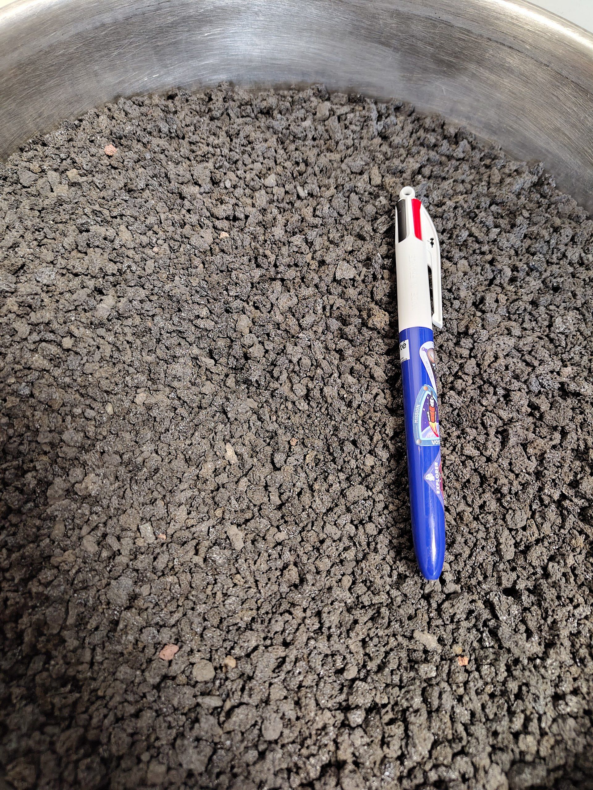

Volcanic deposits sampled on Mount Etna for lunar simulant characterization.
Why this research matters
Before we can build on the Moon, we need to practice on Earth — and that means finding rocks that genuinely resemble lunar soil. Only about 380 kg of real lunar material was brought back by the Apollo missions, and that is far too precious to crush inside a concrete mixer or feed into an oxygen-extraction reactor. Scientists therefore rely on lunar simulants: terrestrial materials that mimic the chemistry, mineralogy and grain-size of the real regolith closely enough to serve as stand-ins for engineering tests.
The problem is that most existing simulants are produced in the United States, supply is limited, and European alternatives remain scarce. This is where Mount Etna enters the picture. Europe's largest active volcano sits at a tectonic crossroads — the Ionian oceanic lithosphere subducting beneath the Calabrian Arc — and its complex magmatic plumbing has generated an unusually wide compositional range of volcanic products, from tholeiitic to alkali basalts. Some of those products turn out to be remarkably close to what Apollo astronauts scooped up on the lunar highlands.
What we did
We collected samples from three geologically distinct sites on Etna, each representing a different volcanic environment that could mirror features we expect to find on the Moon:
🌋 Cisternazza Pit Crater (2 600 m a.s.l.)
A summit pit crater mantled by fresh pyroclastic fall deposits from the paroxysmal eruptions of the last four decades — unweathered, glassy material ideal for simulating impact-generated lunar regolith. Three samples collected (CL-2, CM-1, CM-3).
🪨 Monte Nunziata Lava Tube (1 790 m a.s.l.)
Pyroclastic deposits behind the lining wall of an 1843-eruption lava tube — analogous to material that might accumulate inside lunar lava tubes, the prime candidates for future sheltered habitats. One sample (MN-1).
🕳️ Tre Livelli Lava Tube System (1 625 m a.s.l.)
Basaltic samples from different levels of a multi-tiered 1792–93 lava tube, capturing the internal variability of tube-hosted flows — relevant because the Moon hosts extensive lava tube networks. Two samples (TL-4, TL-5).

SEM image of volcanic glass fragment from CL-2.

Comparison with Apollo 14 regolith composition.
We then subjected these samples to a comprehensive analytical workflow inspired by — but not limited to — the NASA protocol for simulant characterisation. The pipeline combined bulk chemical screening (XRF + principal component analysis), quantitative mineralogy (Rietveld-refined XRD), cross-validation (ICP-OES), morphological analysis (optical microscopy, SEM-EDS, particle-size distribution), hyperspectral imaging in the VIS-NIR range, and two practical ISRU tests: alkali-activated material synthesis (i.e. "lunar concrete") and solid-gas carbothermal reduction for oxygen/water extraction.
Key findings
1. Chemistry: a near-twin of Apollo 14
Principal component analysis of major-element XRF data immediately flagged sample CL2 (Cisternazza pyroclastics) as the closest match to Apollo 14 highlands materials — specifically to sample 14259, a mature regolith collected 125 m west of the Apollo 14 Lunar Module on the Fra Mauro formation. The main compositional offset is higher alkali content (Na₂O ≈ 3.3 % vs 0.7 %; K₂O ≈ 1.8 % vs 0.5 %), which is expected: the Moon is depleted in volatile lithophile elements by a factor of 4–5 relative to Earth's primitive upper mantle.
| Oxide | CL2 (Etna) | 14259 (Apollo 14) | Match? |
|---|---|---|---|
| SiO₂ | 47.5 % | 48.1 % | ✓ excellent |
| TiO₂ | 1.9 % | 1.8 % | ✓ excellent |
| Al₂O₃ | 16.4 % | 17.0 % | ✓ excellent |
| FeOtot | 11.7 % | 10.1 % | ✓ good |
| CaO | 10.8 % | 10.7 % | ✓ excellent |
| MgO | 5.5 % | 9.3 % | △ lower |
| Na₂O | 3.3 % | 0.7 % | △ higher (expected) |
| K₂O | 1.8 % | 0.5 % | △ higher (expected) |
2. Mineralogy: the right mineral cocktail, including 50 % glass
Rietveld-refined XRD showed CL2 carries a plagioclase-pyroxene-olivine assemblage with roughly 50 % amorphous (glass) phase — strikingly close to the 47.7 % glass measured in Apollo 14259. That glass fraction is crucial: on the Moon, impact melting and explosive volcanism produce abundant glassy phases in the regolith, and any serious simulant must reproduce this feature. Sample TL5, despite acceptable chemistry, was disqualified because it lacked glass entirely (>55 % feldspar instead).
3. Spectral fingerprint: CL2 looks like lunar agglutinates
Hyperspectral analysis in the 0.4–2.5 µm range revealed that CL2's 1-µm absorption feature — diagnostic of Fe²⁺ in pyroxene and olivine — closely matches the spectral signature of the agglutinate-rich fraction of Apollo 14259. A PCA of spectral parameters (band centre, FWHM, asymmetry) confirmed this affinity. The slight ~30 nm offset in band minimum reflects the higher Ca content in Etna's augite compared with the low-Ca orthopyroxene dominant in the Apollo agglutinates.
4. Building with "Moon dust": up to 16.4 MPa compressive strength
Four alkali-activated formulations were prepared from CL2 powder and cured for 28 days at 25 °C and 65 % relative humidity. The best performer (sodium aluminate + sodium hydroxide, liquid/solid ratio 0.27) reached an average compressive strength of 16.40 ± 3.36 MPa. Adding 3 % urea slightly reduced peak strength (14.50 MPa) but dramatically improved batch-to-batch consistency (coefficient of variation dropping from 20.5 % to 6.9 %) — a critical advantage for automated robotic construction on the Moon.
On the Moon, where gravity is only 1/6 of Earth's, even a conservatively degraded material (accounting for vacuum and thermal cycling) would bear loads equivalent to a much stronger terrestrial concrete, making these values promising for habitats, landing pads and radiation shielding.
5. Oxygen and water extraction: comparable to certified simulants
CL2 was tested in a solid-gas carbothermal reduction plant at 1 100 °C for 8 hours using a H₂/CH₄ gas mixture. The CO extraction trend closely tracked those of certified highlands simulants NU-LHT-2M and LHS-1. CL2's higher ferrous-oxide content actually increased its reactivity with hydrogen, supporting faster reduction during hydrogen-only process steps — a practical advantage for ISRU oxygen production.
Why Etna, and why now?
Mount Etna offers something no artificial blending plant can easily replicate: natural compositional variability. Its complex slab-edge geodynamics has produced both mare-like and highlands-like lithologies within a few kilometres of each other, and Sicilian law already classifies volcanic ash fallout as a reusable waste stream. That means tonnes of fresh simulant material can be sourced legally, sustainably and cheaply — right on the doorstep of European space agencies and research labs. As ISRU technologies mature and demand for large-volume testing grows, a readily accessible, high-fidelity natural simulant like CL2 could become an invaluable asset for the next phase of lunar exploration.
Where to find the full paper
The full article is available at doi.org/10.1016/j.mtadv.2025.100678. You can also watch the video interview about this work.